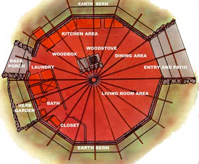
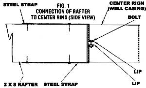
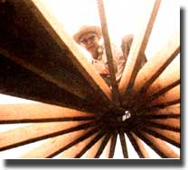
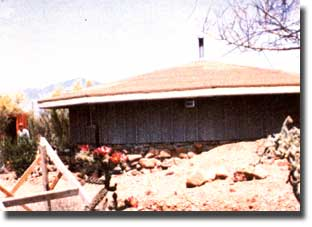
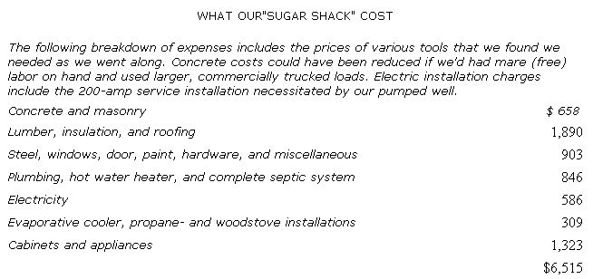

Three years ago, my husband and I bought a four-acre lot, on the outskirts of Tucson, with the intention of building "someday". The mobile home we lived in at the time was too large for us (since our children were grown and had left home), and besides, we wanted to try our hand at constructing a "real" house.
We knew that taking on such a project would be-to say the least-ambitious I had only a little relevant experience, having helped my first husband and my father erect a house on a five-acre homestead in the late 50's. And Jerome, my spouse, had had no house-building background at all. However, his job involved doing a bit of plumbing ... and as a young man on a farm, he'd learned something about rough carpentry and wiring.
Also, we had a few good do-it-yourself books at our disposal ... one son who's a skilled carpenter, and another in the home maintenance business ... and access to numerous self-help stores and lumberyards near our property. So we felt fairly confident that we could tackle the building project and-if necessary-holler for assistance along the way. Mostly, though, we Simply had a lot of stubborn determination to prove (to ourselves and others) that we could construct something lasting and attractive with our own four hands!
In fact, only one question remained: just what would that "something" be?
Fortune soon smiled on us, though , and we heard of a course in housing construction being offered by our area's university. We figured it was just what we needed, and hurried to enroll.
The class was taught by Don Schultz, a professor in the Systems and Industrial Engineering Department of the University of Arizona. It was a labor of love on Don's part ... since he's genuinely excited about the idea of people's pitching in and working together to build low-cost housing for themselves. And in the professor's mind, no structure lends itself better to such an end than the yurt: the traditional, dome-shaped dwelling used by the Mongolians for centuries. Don, however, had modified the design slightly, so that-rather than being perfectly round-a home based upon his plan would be polygonal (many-sided).
Such a structure, said Mr. Schultz, can be raised inexpensively.. even by a novice. All the wall sections can be built alike and then lifted into place, using conventional construction materials and techniques. Therefore, if the outside walls are made from standardized 8-foot-square panels, you can vary the size of the home simply by varying the number of outside panels. And since there are no supporting interior walls, posts, or pillars, every inch of inside space is usable
While the professor was conducting his class, he was also creating his own living quarters ... logically enough, a complex of three 14-sided yurts north of Tucson. He started by building a yurt garage, and went on to erect a two-yurt house: a living unit and a bedroom unit joined by an entry hall. We were fortunate in being able to see one of the yurts under construction and-later-to watch the final touches being added to the interior. It was obvious that Don had constructed a very beautiful, efficient, and unusual home... and we knew right then and there that a conventional house just wouldn't do for us. We wanted a yurt.
We decided to start our project (as our teacher had) by constructing an outbuilding, so we could learn from the mistakes we were quite likely to make. Some playing with pencil and paper-and a bit of elementary geometry-told us that we could enclose about 500 square feet of space in a ten sided building. That would be enough, we figured, for temporary living quarters and-later-a garage-workshop.
We "computed" by hit-or-miss drawing (more precise folks may want to use trigonometry) that a structure with a 13-foot radius would have a perimeter of ten 8-foot sides. This was the radius to the "corners" (where the sides would meet). The distance from the center point of the building to the middle of each panel would be about 12-112 feet. Therefore, our floor plan "pie" would consist of ten triangular sections, each 12-1/2 feet in height and 8 feet at the base ... or 50 square feet apiece.
Our property is close to the mountains and is blessed (cursed?) with talus ... rocks eroded from (and generally piled at the bottom of) cliffs. We decided to take advantage of this abundant-and free-supply by building stone walls halfway up, and then using standard 4' X 8' panels for the upper portions. We also figured we'd berm the lower half of the exterior (to keep our house cool) ... insulate the top half with fiber glass ... and add a roof with a wide over hang for protection from the sweltering desert sun.
To save money, we dug the trenches for our home's foundation footings by hand, gathered rocks for the side walls ourselves, and toted the stone to the site by truck. It was heavy, tiresome, hard work.
Next, we brought in a series of 3/4-yard loads of concrete and poured the footings. One batch was enough to complete less than two sides, because our footings were 18" wide and (since our building site is on a slight knoll) ranged from 14" to 24" below grade. (We soon learned that we had to work fast with our bantam-sized rental trailers full of prepared concrete, because such devices don't have a mixer ... just a small hole with a gate, and a hydraulic jack to tilt the little cart for pouring.)
We spent the next eight months laying rocks, directly on top of the footings, for nine of the walls. For the tenth-front--panel, we installed a used patio door. And, since we intended to berm the house, we built low rock-and-mortar wings that extended from each side of the entries to hold back the earth. Putting up the rock walls was definitely the slowest, most back-breaking part of the house-building project.
Part of our problem, of course, was that rocks just don't behave like blocks or bricks ... each is a different size and shape. Consequently, we first had to lay the stones dry to make sure they'd fit, and then take them down ... wash them with water ... and-finally-set them in with mortar (a mixture of three parts sand, two parts lime, and one part cement). We tried premixed mortar, but found it too sandy ... we had to add both lime and cement to obtain the right consistency.
Some of the boulders on the bottoms of the walls were so large that we had to chain them to our four-wheel-drive Scout, and drag the titans into place on the wet mortar.
We saved all the flat talus we found, and used those slabs on the tops of our walls, leveling as we worked. After we mortared in the last layer, we drilled holes into the stone and inserted the bolts that would anchor the wood framing.
We finished the rock walls by laying 2 X 4's (sealed to prevent absorption of moisture) over the stone and positioning the boards with enough mortar beneath them to make them level, as determined by a "split image" transit. (The instrument looks like a box camera, and contains two mirrors with marks that align when whatever you're working with is trued up. Years ago I obtained one, but I haven't seen another since. However, a level transit-a surveyor's instrument used for alignment and height reference-would also have done the job.)
Once the rock walls were finished, we borrowed a mini-dozer to level the floor (to grade) and to berm the outside of the house. The berming soil-which came from our excavation for the footings, septic system, etc.-was mostly boulders, gravel, rock, and sand ... and no special effort was made to provide drainage near the foundation or walls.
In our "spare time" we built frames, using 2 X 4 lumber, for the panels that would form the top half of the walls. While we were at it, we framed in the windows, too, and then covered the panels with sheathing (for strength and insulation).
We marked each component (specifying "dining room", "kitchen", etc.) ... hauled them all to the site in two pickup trucks ... and-with the help of a friend-got the panels bolted down and braced in place in about two hours. Very little bracing was required, however, because the frames butt up against one another, and the top plates (2 X 4's) overlap the corners, thus tying the frames together. (We also put flat metal plates on the corners for added stability.)
Next, we poured the floor, using five cartloads of concrete. After the floor had set, we tackled the job of installing a roof.
Since any interior partitions in a yurt are not load-bearing, the side walls must support the entire weight of the roof. This is accomplished by using strips of steel to strap the rafters to a center ring at the apex of the cone-shaped roof, and by installing a shape-retaining 1/2" steel cable through the rafters and around the outside of the house.
When the cable is tightened, it raises the roof slightly ... and the rafters are then anchored to the walls.
For our building's center ring, we used a piece of 10" well casing, about 7-1/2" long, that a friend gave us (a bigger yurt would need a larger ring, of course). Another acquaintance contributed the steel cable we needed ... and the 2 X 8 lumber for our rafters was donated by a brother-in-law in the furniture business. The 1/8" X 1-1/2" strapping steel was a bit more difficult to come by, but a company in Phoenix finally delivered the few required pieces to our door, by truck, atop their regular commercial orders.
Making the straps was an easy-but tedious-job. Our yurt would have 20 rafters, and we'd need two straps per board ... so we made 40 in all. Every strap was bent to an L-shape ... and then a right-angled, 2" lip was bent off the shorter arm of each "L". We drilled a hole through the center of every lip (so that each pair of straps could be bolted together inside the center ring ... as in Fig. 1) and bored another hole an inch or so in from each end of the longest arms (so that we could nail the "L" to its rafter).
Next, we drilled holes through the lower ends of the 2 X 8 rafters (we first added reinforcing 2 X 8 gussets to the ends of key rafters, to provide added strength) and inserted 1-1/4"-long metal "eyes"-which we cut from 3/4" pipe-into the openings (later we'd string the cable through them). Also, my partner built a prop-made from parallel 2 X 4's with a crossmember at each end -to hold the roof peak and center ring in place temporarily as we raised the rafters.
With everything ready, our son helped us put up the rafters (by hand) and bolt them onto the ring. Each board was abutted to the ring and fastened to the circle with its pair of straps. The strips were attached along the narrow top and bottom edges of the rafters, so that the short arms fit vertically into and along the inside surface of the well casing (see Fig. 1), with the 2" lips projecting at a right angle toward the center of the ring. The projections (which should not quite touch each other) were then bolted together.
Once the rafters were in place, we inserted the steel cable through the pipe "eyes" at the perimeter of the house and joined it with a turnbuckle. When we tightened the screw slightly by hand, to our surprise it raised the roof 1/4 " off the temporary stand! Success! With the cable tightened, we then
attached the rafters to the walls with framing anchors.
We finished the roof by applying chipboard sheathing ... 30-pound felt ... rolled roofing ... and tar and desert sand. Then we lined the roof's interior with fiberglass, leaving a 1/4" to 1/2" air space between the chipboard and the insulation. Finally, we applied trim board to the ends of the rafter tails, and covered the outside panels with resawed pine finished with a wash mixture of one gallon of gray paint, two gallons of linseed oil, and two to three gallons of thinner.
FINAL TOUCHES
Completing the interior of our house was the most rewarding part of this project. The only inside wall in the house is that which closes off the bathroom, the closet, and a utility area ... and-of course-it's not load-bearing. We installed leftover fiberglass insulation in the bathroom walls as a noise dampener ... but the inherent acoustics of the design are excellent anyway, and noise isn't a problem.
'Then we added the homey touches: wood paneling to cover the inside walls above the rock ... aromatic red cedar in the bedroom and linen closets ... washable grass-cloth-design paneling for the ceiling ... and a little woodstove with its pipe vaulting skyward through the roof's center ring.
Of course, there was still plenty of work to be done outside. We drilled a well ... dug-with the help of a professional backhoe operator-180 feet of trench for water, electricity, and phone connections ... and installed our septic tank (a lightweight fiberglass vat that we simply hauled in our truck to the previously dug hole, and rolled it into place).
SATISFACTION!
One of our sons assisted with the roofing and backfilling ... but other than that (and an occasional, and vastly appreciated, helping hand from a visitor), my husband and I built our home-which we've dubbed "Sugar Shack"-all by ourselves. Actually, though, that's not an entirely accurate statement, because a lot of people took part by giving us ideas and being tremendously supportive of "those two old codgers trying to build a house, out in the desert, with their bare hands''.
We love our Sugar Shack ... that's for sure. The design (plus its insulation and earth berm) makes the house easy to cool and heat. It's open and airy, too ... and our small evaporative cooler (set in the kitchen wall) humidifies and air-conditions the house to a comfortable 70'F even on I 10'F days. And we never need our woodstove unless the weather dips to the 30' to 40'F range.
In short, our little project has it all: efficiency, economy, beauty, and comfort. That's not bad for just $6,500 and some healthful, body-building exercise! And even though we still have some jobs to complete (a well house, a solar hookup for hot water, and a front porch slab ... not to mention our "big house"), we can now slow down a bit, look at what we've accomplished, and know that-with planning and hard workall things are possible.
|
 Thanks to its circular design and wood-and-native-rock exterior, ""Sugar Shack"" blends in particularly well with the surrounding terrain. |
 Here's a good look at the roof's strong central support system. |
 |
|
 |
 |
|